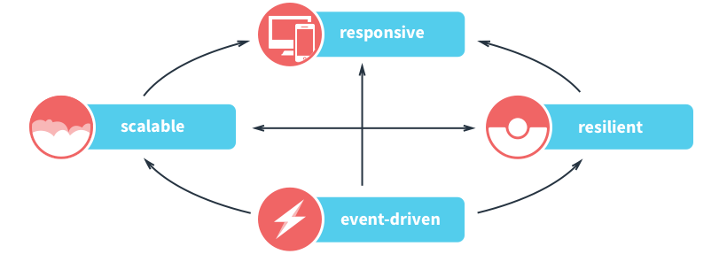

Going Reactive with Java 8
Ryan Knight & Björn Antonsson
Users Want
- In-Sync Data
- Real-time Collaboration
- Instant Feedback
- To Not Wait
Users Want Reactive Apps
www.ReactiveManifesto.org

Reactive Web Apps with
Play Framework
Reactive Web Apps with
Play Framework
- Reactive Requests
- Reactive Composition
- Reactive Push
- 2-Way Reactive
Reactive Requests

Reactive Apps with Akka
Reactive Apps with Akka
- Actor Based
- Highly Concurrent
- Asynchronous
- Distributable
- Scales Up & Out
Akka Actor Properties
- Message Based
- Event Driven
- Sane Concurrency Model
- Non-Request Based Lifecycle
- Isolated Failure Handling
(Supervision)
Interoperability

Demo: Reactive Stocks (Java 8)
- Get the Activator Template: Reactive Stocks (Java 8)
http://typesafe.com/activator/template/reactive-stocks-java8 - Akka Actors for thread-safe state and non-request based events
- Play Framework for Reactive Composition, Reactive Push, and a JavaScript UI
Get Started with Activator
- Hello Akka! (Java 8)
http://typesafe.com/activator/template/hello-akka-java8 - Go Reactive with Java 8 & Play Framework
http://typesafe.com/activator/template/reactive-java8-play - Akka Supervision in Java with Lambdas
http://typesafe.com/activator/template/akka-supervision-java-lambda - Akka FSM in Java with Lambdas
http://typesafe.com/activator/template/akka-sample-fsm-java-lambda - Akka Persistence Samples in Java with Lambdas
http://typesafe.com/activator/template/akka-sample-persistence-java-lambda - Reactive Stocks (Java 8)
http://typesafe.com/activator/template/reactive-stocks-java8